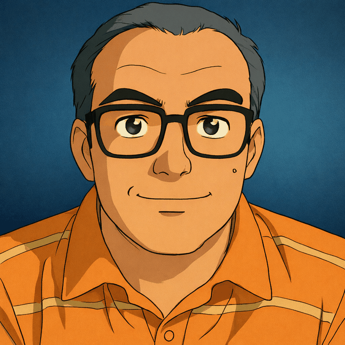
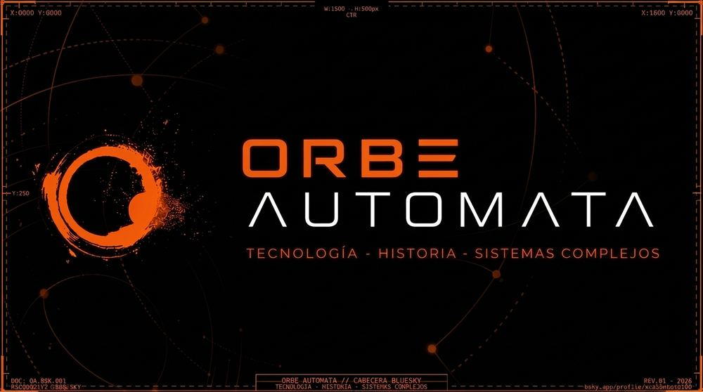
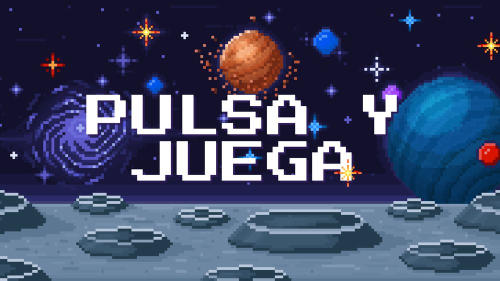

Personas y liderazgo
Coordinación de equipos, comunicación abierta, motivación y seguimiento de objetivos en entornos de soporte y atención al cliente.
Profesional con trayectoria en tecnología y telecomunicaciones, con experiencia en coordinación de equipos, gestión de grandes cuentas, operaciones de soporte y mejora continua.
Mi objetivo es conectar personas, negocio y tecnología para optimizar procesos, mejorar el servicio y conseguir resultados.
Incorporo herramientas de inteligencia artificial en el ámbito de la gestión, como apoyo para optimizar procesos, analizar información y mejorar la toma de decisiones.

He desarrollado mi carrera en los sectores de tecnología y telecomunicaciones, en funciones que conectan el servicio al cliente, las operaciones y los objetivos de negocio.
Coordinación de equipos, comunicación abierta, motivación y seguimiento de objetivos en entornos de soporte y atención al cliente.
Gestión de grandes cuentas, desarrollo de relaciones comerciales, prospección y colaboración con equipos de ventas.
Supervisión operativa, evaluación del rendimiento, revisión de herramientas y atención a la calidad de los procesos.
Supervisión operativa, seguimiento del rendimiento y revisión de herramientas y sistemas para favorecer su eficacia.
Liderazgo de equipo, motivación y fomento de un entorno de comunicación positiva y colaboración.
Técnico en RR.HH. y Excelencia Profesional para Reino Unido e Irlanda. Gestión de planes de carrera, políticas de motivación y soporte a empleados.
Gestión de grandes clientes, coordinación de ventas y almacén, y relación con grandes superficies.
Trayectoria anterior en ventas, implantación comercial, gestión de tienda, visual merchandising y grandes cuentas.
Una combinación de visión comercial, capacidad de coordinación y familiaridad con entornos tecnológicos.
Especialista en Marketing Digital · Dirección y Gestión de Empresas · Marketing · Visual Merchandising · Mando Intermedio Comercial.
De forma independiente mantengo los dos blogs de divulgación y tecnología que verás a continuación para canalizar mi curiosidad y seguir aprendiendo, siempre con una clara separación respecto a mi actividad profesional. Si quieres seguirme en redes sociales, puedes hacerlo desde retrovulcano.es.

Un espacio de divulgación sobre ciencia, sistemas complejos e historia de la tecnología.
Explorar Orbe Autómata ↗
Un rincón dedicado a los videojuegos clásicos, la cultura de 8 bits y la memoria digital.
Conocer Pulsa y Juega ↗Estoy abierto a conversaciones sobre oportunidades profesionales, colaboración y nuevos retos.